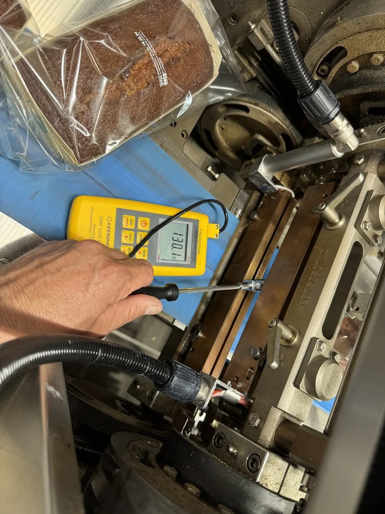
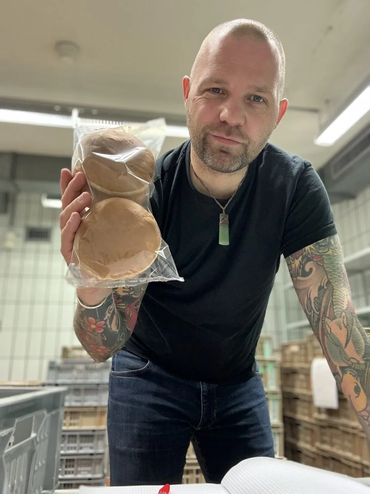
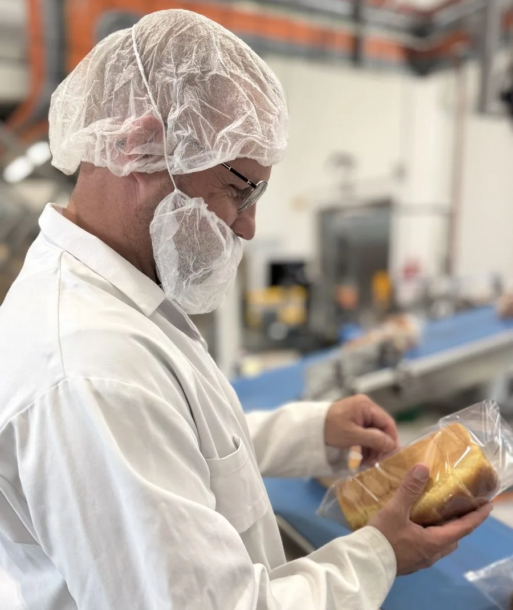
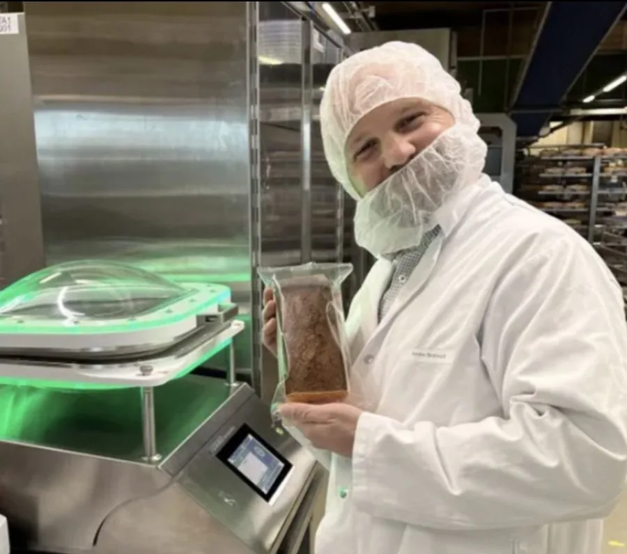

Für Lebensmittelhersteller in Nord- und Mitteldeutschland
- „Die Folie läuft nicht.“
- „Der neue Karton ist zu weich.“
Wenn Verpackungsmaterial, Linie oder Stammdaten nicht mehr zusammenpassen,
bringe ich das in Einklang.
Erfolge in Zahlen
Was Verpackungsoptimierung bringt
Erfahrung, die in Ihr Projekt einfließt
Inbetriebnahme neuer Verpackungslinien
Sie profitieren von Erfahrung aus Anlauf, Einstellung und Abnahme – nicht nur aus der Theorie.
SAP S/4 HANA-Systemwechsel begleitet
Materialänderungen landen sauber in Stammdaten, Stücklisten und Spezifikationen.
Umstellung auf Mono-aPET-Folien
Recyclingfähige Folien, die auch auf der Linie funktionieren.
Arbeitsgruppe für recyclingfähige Folien gegründet
Aktuelles Wissen zu Materialien, Lieferanten und Entwicklungen im Markt.
Leistungen
Wobei ich Sie unterstütze
Rundgang & Bestandsaufnahme
Gemeinsamer Gang durch Ihren Betrieb: Ich erfasse Ihre Verpackungen und Materialien und zeige auf, wo Optimierungspotenzial liegt.
Mehr erfahrenNeue Verpackungsideen
Lösungen für Ihr Produkt, die recyclingfähig, maschinengängig und wirtschaftlich sind – von der Idee bis zur Umsetzung.
Mehr erfahrenAusschreibungen
Anforderungsprofil an Packstoff und Packmittel festlegen, Angebote vergleichen, den passenden Lieferanten auswählen – unabhängig und ohne Provisionen.
Mehr erfahrenTests begleiten & auswerten
Material- und Maschinentests an Ihrer Linie planen und durchführen, Ergebnisse auswerten, Fehlversuche analysieren.
Mehr erfahrenNachhaltigkeit & CO₂
Berechnungen zu Materialeinsparung und CO₂-Einsparungen Ihrer Verpackungen – belastbare Zahlen statt Schätzungen.
Mehr erfahrenProjektbegleitung – End-to-End
Ich begleite Ihr Verpackungsprojekt komplett, von der ersten Analyse bis zur Abnahme an der Linie – oder steige in ein laufendes Projekt ein, wenn intern die Kapazität fehlt.
Mehr erfahrenProzess
Ihr Weg zum Erfolg – in vier Schritten
Analyse
- Vollständige Bestandsaufnahme
- Verpackungsmaterialien
- Maschinenparameter
- SAP-Stammdaten
- Linienperformance

Engineering
- Identifikation Einspar- und Optimierungspotenzial
- Materialkosten
- Rezyklatanteil
- PPWR-Konformität
- Umsetzbarkeit

Umsetzung
- Inbetriebnahme und Prozessintegration neuer Packstoffe
- Materialumstellung im laufenden Betrieb
- SAP-Stammdaten an die Materialumstellung anpassen
- Von der Ausschreibung zur Abnahme

Ziel
- Stabile Linie und Prozesse
- Korrekte SAP-Daten
- PPWR-Konform
- Messbar und nachvollziehbar

Häufige Fragen
Fragen zum Strategiecheck
Was kostet der Strategiecheck bzw. die Zusammenarbeit danach?
Der Strategiecheck (30 Minuten) ist kostenlos. Für die anschließende Zusammenarbeit gibt es je nach Aufgabe zwei Modelle: Tagessatz für flexiblen, zeitlich begrenzten Einsatz oder ein projektbezogenes Angebot mit festem Umfang. Die konkreten Konditionen besprechen wir individuell im Strategiecheck.
Für welche Betriebsgröße lohnt sich das?
Entscheidend ist weniger die Betriebsgröße als die Komplexität und der wirtschaftliche Hebel des Projekts. Besonders sinnvoll ist eine Zusammenarbeit für industrielle Lebensmittelhersteller mit eigener Produktion und wiederkehrenden Verpackungs- oder Materialprojekten.
Wie arbeiten Sie mit Betrieben in Deutschland?
Projektbezogen vor Ort an Ihrer Linie – für Rundgänge, Tests und Abnahmen – und remote für Auswertungen, SAP und Projektarbeit. Einsatztage und Reisekosten stimmen wir vorab transparent ab.
Bin ich nach dem Strategiecheck zu etwas verpflichtet?
Nein. Der Strategiecheck ist unverbindlich und dient dazu, gemeinsam zu klären, wo Ihre Verpackung heute steht. Ob und wie es danach weitergeht, entscheiden Sie in Ruhe im Anschluss.
Wie lange dauert es, bis ich eine Lösung habe?
Das ist projektabhängig und lässt sich pauschal schwer beantworten. Der Einstieg ist aber immer gleich: ein Audit-Tag vor Ort – vormittags Bestandsaufnahme an der Linie, nachmittags Präsentation eines ersten Lösungsansatzes. Danach wissen Sie, welcher Zeitrahmen für Ihr Projekt realistisch ist.
Wie gehen Sie mit vertraulichen Daten und internen Systemen um?
Für jedes Projekt gilt eine vertraglich festgelegte Stillschweigevereinbarung. Ihre Daten, Prozesse und SAP-Systeme werden ausschließlich für die vereinbarte Aufgabe genutzt.
Sind Sie an bestimmte Lieferanten oder Materialhersteller gebunden?
Nein. Ich arbeite unabhängig und nehme keine Provisionen von Lieferanten oder Materialherstellern an. Die Auswahl von Material und Lieferant erfolgt ausschließlich nach Ihrem Interesse.
Der erste Schritt zu Ihrem Erfolg.
Kostenlos und unverbindlich – 30 Minuten für Material, Linie und Stammdaten.
Strategiecheck buchenFlexibler Einsatz – vor Ort an der Linie, remote für SAP & Projektarbeit.
Für Lebensmittelbetriebe in Nord- und Mitteldeutschland.
„Verpackung muss nicht nur nachhaltig sein – sie muss funktionieren.“André Strohwald | Strohwald Verpackungsentwicklung
Kontakt
Sprechen wir über Ihre Linie.
André Strohwald
Strohwald Verpackungsentwicklung
Schulhausstrasse 21
8600 Dübendorf, Schweiz
Termin
Kostenlos und unverbindlich – 30 Minuten für Material, Linie und Stammdaten.
Strategiecheck buchen